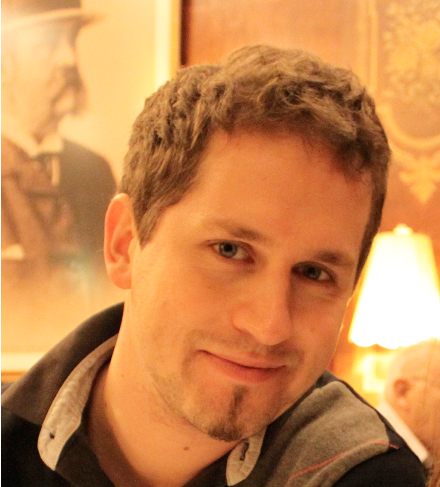

Über mich
Mein Name ist Stefan Mayer, lebe in Graz und bin seit über 14 Jahren im Webbereich tätig.
Durch meine Ausbildung an der HTL und meinem Telematik-Studium kann ich nicht nur Software entwickeln, sondern baue auch hobbymäßig meine eigene IOT Hardware und programmiere zudem die Mikroprozessoren selbst.
Seit über 6 Jahren arbeite ich bei NETCONOMY Software & Consulting GmbH, anfangs als Webentwickler, danach als Software-Architekt und leite nun seit 2 Jahren den Frontend-Bereich bestehend aus über 20 Entwicklern. Zudem bin ich Product Owner des firmeninternen Tools and Automation Team, welches effizienzsteigernde Tools und Software für die anderen Teams im Unternehmen entwickelt.
Neben der Softwareentwicklung im IOT und Web-Bereich, beschäftige ich mich auch stark mit Mitarbeiterführung und agiler Firmenkultur. Privat verreise ich zudem noch gerne in Länder außerhalb Europas, die mir durch ihre unterschiedliche Kultur immer wieder eine neue Perspektive auf das Leben geben.